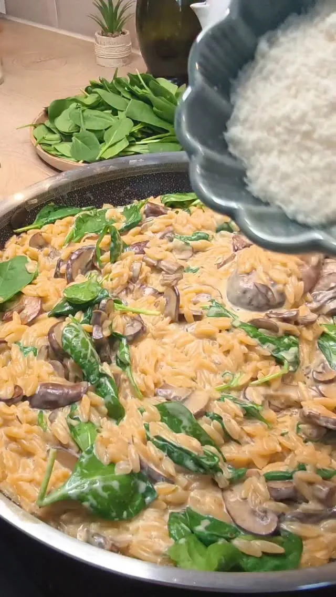

Cremige One-Pot-Pasta mit Champignons
- 2–3 Portionen
- 10 Zutaten
- 5 Schritte
Zur Zubereitung Video ansehen ↗
Zutaten
Zubereitung
- Öl in einem großen Topf erhitzen, Zwiebel & Knoblauch glasig anbraten.
- Champignons dazugeben und 3–4 Minuten braten.
- Pasta, Brühe und Sahne hinzufügen. Alles aufkochen und ca. 10–12 Minuten köcheln lassen, bis die Pasta gar ist (gelegentlich umrühren).
- Parmesan unterrühren, mit Salz & Pfeffer abschmecken.
- Optional mit Petersilie toppen – fertig!